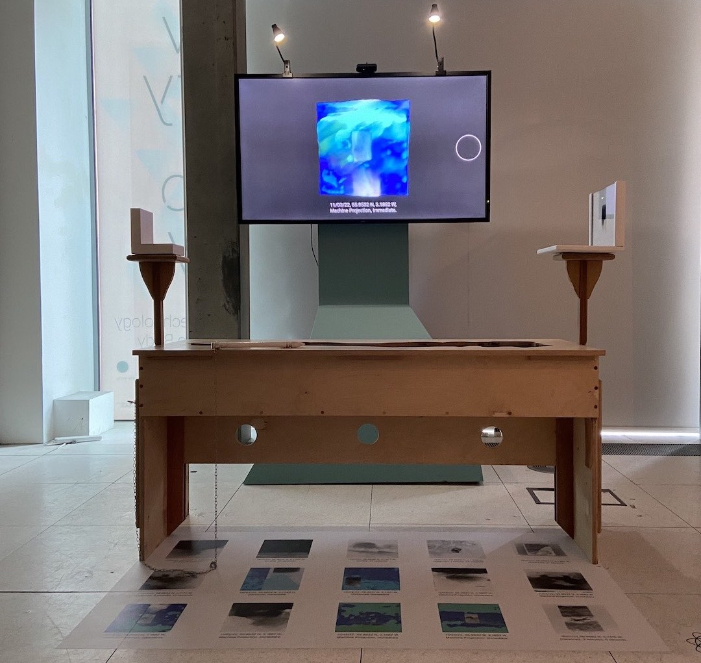
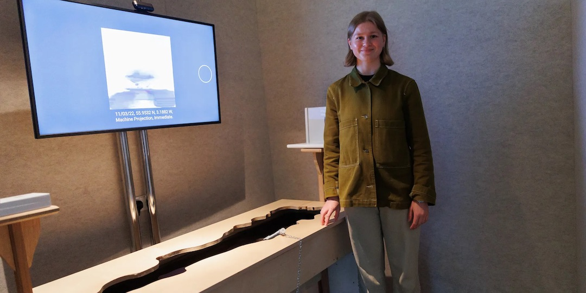
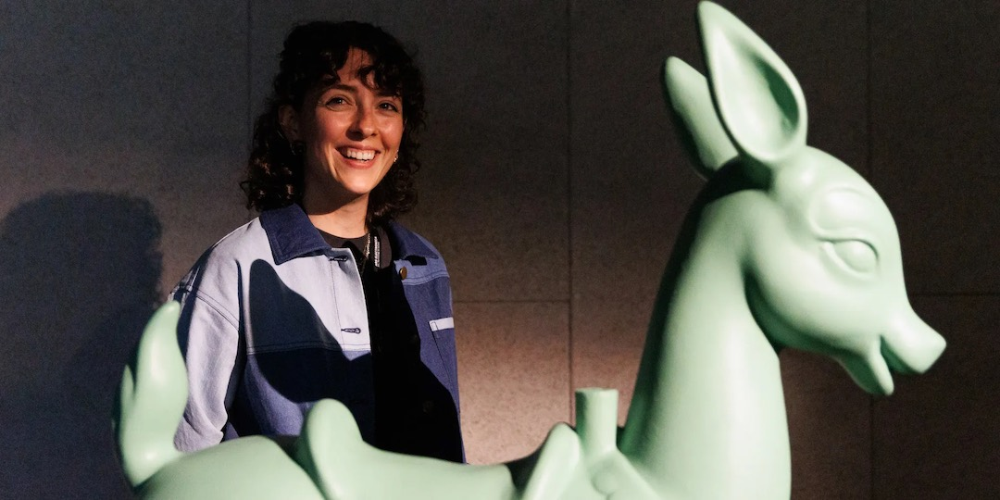

The New Real is a partnership between the University of Edinburgh, Alan Turing Institute and Edinburgh’s Festivals that explores how art and creativity can help to radically change how we think about AI design.
The goal is to move beyond the current paradigm of learning patterns from large amounts of data, to embrace human traits such as bias, disagreement, and uncertainty as a signal with creative potential rather than noise that needs to be removed.
The New Real Observatory platform is an 'experiential AI' system developed with and for artists, to explore the link between global-scale data and ground truth, and an experiential approach to explainability in artificial intelligence.
I provided consultancy to the team of the New Real to support the creation of two original artworks, “The Overlay” by Inés Cámara Leret and “Photographic Cues” by Keziah MacNeill, as digital experience and also physical artworks to be showcased at the Ars Electronica 2022 in Linz, Austria.
The goal was to make explicit and legible for an audience the underlying science and technology and the link between global-scale data and subjective realities.
My role was to translate the artistic concepts into technical requirements and scope of works and then to scout and brief creative technologists to collaborate with the artists to complete the works.


